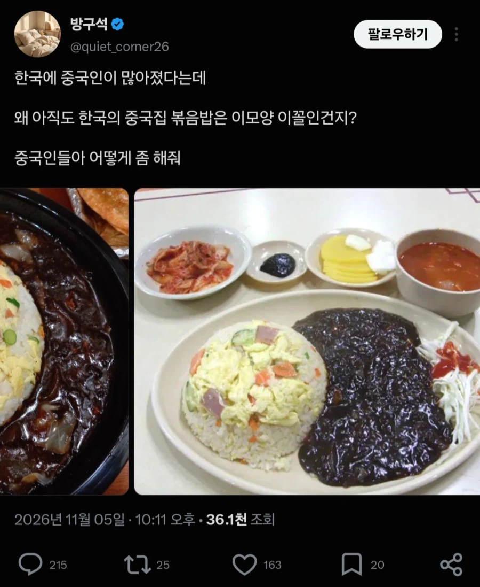

신비해지기 직전...

신비해지기 직전...
첫짤 사진에 저거 설마 오이임?
볶음밥에 오이를 넣지 말란 법이 있을까?
오이오이
일단 남쪽엔 오이잘안넣는데 산동은 오이넣은 볶음밥 많음. 아삭한 식감때문에 넣는듯 (남쪽은 채소줄기넣음). 또 오이향이 을매나 좋은데
당연히넣어야한다고봄. 근데 저렇게 큰덩이가아니고 완전 잘게넣어야 더 향긋함.
어 안돼. 돌아가.
오, 이런..
현지서도 넣더라
오이 맛있음
볶음밥에 ㄹㅇ 뭔 오이냐 아마 본문이 중국인이 한국쪽에 뭐라하는거라 실드 치는거라고 생각한다 난 니가 맞는말 했다고봄
난 가끔 넣음 오이랑 계란만 써서 맛소금으로 간하면 맛있음
북한도 아니고 저 정도로 신비해지겠냐고

아직도 따거가 남아있었다니.............ㅠㅠ
볶음밥 열사니뮤ㅠㅠㅠ
근데 진짜 중국집 볶음밥들 개 ㅈ같긴해
열에 아홉은 찐밥나온다니까
중국집 진입컷 허들 왜이리 약해졌냐
배달 중국집 너무 하향평준화됐어.. 예전에 철가방 배달할때같이 근본있게하는집이 다 뒤졌음
그드립을 니가치면
중국집 볶음밥은 안먹은지 오래
오히려 쌀국수나 마라탕, 양꼬치 하는집이 더 잘함
난 그래서 요즘 면이랑 탕수육만 중국집에서 시켜먹고 밥과 요리는 마라탕이나 양꼬치집에서 시켜먹음 이게 진짜임
이제 볶음밥은 마라탕집에서 먹어야됨..아님 차라리 냉동 볶음밥 사서 후라이팬에 한번만 살짝 볶아먹어라
아닛... 따거 ...
역할이 반대가된거같은데 ㅋㅋㅋㅋㅋㅋㅋㅋㅋㅋㅋㅋ
그냥 다른 나라처럼 볶은 밥만 나왔으면 좋겠음 간 다 되서
짜장밥을 먹으려는게 아닌데
20년전만해도 이러지않앗는데....
변할 시간이긴하네 ㅋㅋㅋ
뭐야 조심하라고요;;
그건 이제 냉동을 전자렌지에 딸깍 하는 곳이 존나 많아졌기 때문입니다
볶음밥은 이제 중국집에서 먹는 음식이 아님
마라탕집이나 타이 푸드, 베트남 푸드쪽 가는게 몇억배 나음
맞네 베트남음식점 볶음밥은 맛있었어
아니 중국인이 그 드립을 치면 안되지 ㅋㅋㅋㅋㅋㅋㅋ
어림도 없지 흑미볶음밥!
웃기긴한데 저런 볶음밥은 없어져야
첫 글 쓴게 한국인이고 두번째가 중국인이네?
계란볶음밥 서스펜스 시발ㅋㅋㅋㅋㅋㅋㅋ
ㅋㅋㅋㅋㅋㅋㅋㅋㅋㅋㅋㅋㅋ
진짜 볶밥 잘 만드는 중국집이 드물어지긴 함
와 근데 첫짤 저 볶음밥은 진짜 최악이긴하네 ㅋㅋㅋㅋ
미국때문이구나
넌 그러다 죽는다고!!!